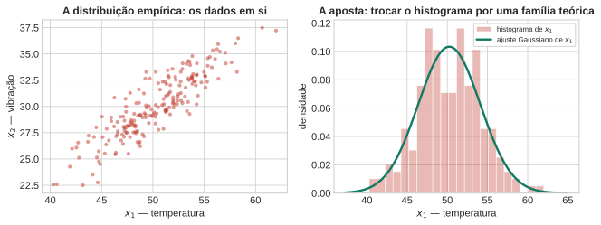
Aula 1: Modelos Generativos Paramétricos e Detecção de Anomalias
Aprendizado Não Supervisionado
1 Como modelar dados sem rótulos?
Todo o curso de Aprendizado Supervisionado parte de um par \((\mathbf{x}, y)\): um vetor de características e um rótulo a prever. Aqui não há \(y\) — só \(\mathbf{x}_1,\dots,\mathbf{x}_N \in \mathbb{R}^d\). A pergunta deixa de ser “que função prevê \(y\) a partir de \(\mathbf{x}\)” e passa a ser mais básica: que forma esses dados têm?
Essa pergunta parece vaga, mas tem uma primeira resposta operacional direta, e é o assunto desta aula: profiling. Descrever o comportamento típico de uma população — a forma que a maioria dos pontos assume — para depois reconhecer o que se desvia dela. Duas medidas antropométricas de um paciente, por exemplo — espessura da dobra cutânea e IMC —, variam juntas na população: quem tem mais gordura subcutânea tende a ter IMC mais alto. Quando um paciente novo chega, a pergunta é: ele se parece com o que já vimos? O fio condutor desta aula é justamente esse par de medidas, de dados reais do Pima Indians Diabetes Dataset (768 pacientes, disponível no Hugging Face Hub).
O caminho desta aula, em uma frase: assumir uma família teórica conhecida para os dados, ajustá-la, e usar a verossimilhança do modelo ajustado para decidir o que é típico e o que não é.
Quatro perguntas guiam o resto da aula:
- Que forma de modelo faz sentido quando não há rótulo — e por que a Gaussiana multivariada é a aposta natural?
- Como ajustar essa forma aos dados, e o que pode dar errado nesse ajuste?
- Como comparar um ponto novo ao modelo ajustado — por que a distância certa não é a Euclidiana?
- Como transformar essa distância numa afirmação probabilística rigorosa, e onde exatamente essa receita quebra?
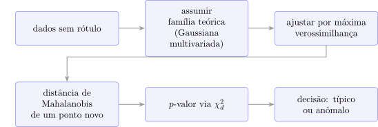
2 Distribuição Empírica vs. Teórica
O objeto mais honesto que se pode construir a partir dos dados é a distribuição empírica: o próprio histograma, ou a nuvem de pontos. Ela nunca está “errada” — é literalmente o que foi observado. Mas tem dois problemas práticos: é ruidosa (poucos dados numa região dão uma estimativa tremendamente instável), e não diz nada sobre pontos que nunca foram observados.
A aposta desta aula é trocar ruído por estrutura: assumir que os dados vieram de uma família teórica conhecida, com poucos parâmetros. O preço é que a suposição pode estar errada — um tema que volta na aula inteira, e no fechamento (Bloco 7).
DicaPor que a distribuição empírica “nunca está errada” e ainda assim não basta para decidir se um ponto novo é típico ou anômalo?
Escreva sua resposta em uma frase, e compare com um colega (2 min).
3 Gaussiana Multivariada
A distribuição Gaussiana (ou normal) multivariada, para um vetor \(\mathbf{x}\in\mathbb{R}^d\), é (PRML, eq. 2.43, p. 78):
\[ \mathcal{N}(\mathbf{x}\mid\boldsymbol\mu,\Sigma) = \frac{1}{(2\pi)^{d/2}}\frac{1}{|\Sigma|^{1/2}} \exp\left\{-\frac12(\mathbf{x}-\boldsymbol\mu)^T\Sigma^{-1}(\mathbf{x}-\boldsymbol\mu)\right\}. \]
Dois parâmetros bastam: \(\boldsymbol\mu\in\mathbb{R}^d\) (o centro) e \(\Sigma\in\mathbb{R}^{d\times d}\) (a forma). \(\Sigma\) é simétrica e positiva definida; seus autovetores dão a orientação dos eixos de densidade constante, e seus autovalores dão o comprimento desses eixos — as curvas de nível da Gaussiana são elipsoides centrados em \(\boldsymbol\mu\) (PRML, pp. 80–81, Figura 2.7).
NotaPor que a Gaussiana é a escolha natural (citado, não provado aqui)
Duas razões clássicas, ambas em PRML §2.3, p. 78: (1) é a distribuição de entropia máxima dada média e covariância fixas — a suposição menos comprometida possível além desses dois momentos; (2) pelo Teorema Central do Limite, a soma de muitas variáveis aleatórias tende a uma Gaussiana, o que a torna plausível como modelo de ruído agregado ou de medições que resultam de muitos efeitos pequenos somados. Nenhuma das duas provas é feita aqui — ambas voltam com mais detalhe em cursos futuros.
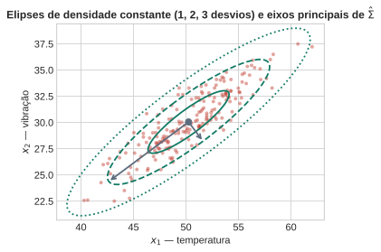
4 Máxima Verossimilhança
Dado um conjunto \(\mathbf{x}_1,\dots,\mathbf{x}_N\) assumido i.i.d. de \(\mathcal{N}(\boldsymbol\mu,\Sigma)\), a máxima verossimilhança dá (PRML §2.3.4, eqs. 2.118–2.122, pp. 93–94):
\[ \hat{\boldsymbol\mu} = \frac1N\sum_{n=1}^N \mathbf{x}_n, \qquad \hat\Sigma_{\text{ML}} = \frac1N\sum_{n=1}^N(\mathbf{x}_n-\hat{\boldsymbol\mu})(\mathbf{x}_n-\hat{\boldsymbol\mu})^T. \]
ImportanteArmadilha prática: \(\hat\Sigma_{\text{ML}}\) é viesada, e precisa de \(N>d\)
Duas coisas para anunciar antes que a turma descubra sozinha. Primeira: \(\mathbb{E}[\hat\Sigma_{\text{ML}}] = \frac{N-1}{N}\Sigma\) — subestima a covariância verdadeira (PRML, eqs. 2.123–2.124, p. 94). A correção padrão divide por \(N-1\) em vez de \(N\): \(\tilde\Sigma = \frac{1}{N-1}\sum_n(\mathbf{x}_n-\hat{\boldsymbol\mu})(\mathbf{x}_n-\hat{\boldsymbol\mu})^T\) (PRML, eq. 2.125, p. 94) — é exatamente o np.cov padrão do NumPy. Segunda, mais grave: se \(N \le d\), \(\hat\Sigma\) não é invertível (posto no máximo \(N-1\), precisa de posto \(d\)). Sem \(\Sigma^{-1}\), não há distância de Mahalanobis, não há verossimilhança bem definida — o resto da aula trava. Guarde isso: é exatamente a maldição da dimensionalidade que abre a Aula 2.
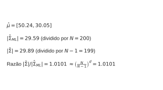
DicaJulgue V ou F: Gaussiana multivariada e máxima verossimilhança
Julgue V ou F — a questão só conta se acertar os 4 itens:
- Os autovetores de \(\Sigma\) dão a orientação das elipses de densidade constante da Gaussiana multivariada; os autovalores dão o comprimento dos eixos.
- O estimador de máxima verossimilhança \(\hat{\boldsymbol\mu}\) é não-viesado: \(\mathbb{E}[\hat{\boldsymbol\mu}] = \boldsymbol\mu\).
- O estimador de máxima verossimilhança \(\hat\Sigma_{\text{ML}}\) (dividido por \(N\)) é não-viesado.
- Se \(N \le d\), a matriz \(\hat\Sigma_{\text{ML}}\) estimada não é invertível.
5 Distância de Mahalanobis
Comparar \(p(\mathbf{x})\) com um limiar é equivalente a comparar o termo que está no expoente — a única parte que depende de \(\mathbf{x}\). Essa quantidade é a distância de Mahalanobis (PRML, eq. 2.44, p. 80):
\[ D_M(\mathbf{x})^2 = (\mathbf{x}-\hat{\boldsymbol\mu})^T\hat\Sigma^{-1}(\mathbf{x}-\hat{\boldsymbol\mu}), \]
que “reduz à distância Euclidiana quando \(\Sigma\) é a identidade” (PRML, p. 80) — mas em geral não é a Euclidiana, e a diferença é o ponto todo desta aula. \(\Sigma^{-1}\) estica o espaço nas direções de baixa variância e comprime nas de alta variância: um deslocamento ao longo do eixo de alta correlação “custa pouco” em Mahalanobis, mesmo que pareça grande em unidades brutas; um deslocamento perpendicular a esse eixo “custa muito”, mesmo que pareça pequeno.
Dois pontos novos tornam isso concreto — nenhum dos dois é o típico “outlier evidente”:
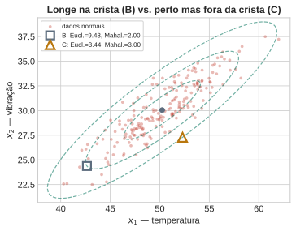
O ponto B está longe do centro em unidades brutas (ao longo da crista de alta correlação), mas sua distância de Mahalanobis é modesta — é exatamente o tipo de desvio que a correlação prevê. O ponto C está próximo do centro em unidades brutas, mas fora da crista — sua distância de Mahalanobis é maior, porque ele quebra a relação entre as duas variáveis, não porque esteja “longe” no sentido ingênuo. Guarde os dois: o próximo bloco transforma essas distâncias em probabilidades, e o contraste entre B e C é exatamente onde a suposição de independência entre dimensões vai errar em direções opostas.
DicaPor que o ponto B, mais distante do centro em unidades brutas, tem uma distância de Mahalanobis menor que a do ponto C, mais próximo?
Pense em termos de \(\Sigma^{-1}\) esticando e comprimindo o espaço (2 min).
6 Da Posição ao \(p\)-valor
6.1 Do limiar fixo ao escore contínuo
Antes de definir o escore, vale entender por que a distância de Mahalanobis ao quadrado tem uma distribuição exata e conhecida quando o modelo está certo — é esse fato, não uma convenção arbitrária, que transforma o próximo passo (o \(p\)-valor) numa afirmação probabilística rigorosa.
Intuição primeiro. A ideia é “desfazer” a elipse. Se existisse uma transformação que tomasse os dados gaussianos correlacionados e os devolvesse como uma nuvem esférica — sem correlação, variância \(1\) em toda direção —, a distância de Mahalanobis nessa nuvem esférica seria simplesmente a distância Euclidiana ao quadrado até o centro. E a distância Euclidiana ao quadrado de um ponto gaussiano padrão \(d\)-dimensional até a origem é, por definição, uma soma de \(d\) quadrados de normais padrão independentes — exatamente uma qui-quadrado com \(d\) graus de liberdade. O resto é só confirmar que essa transformação “desfazedora” existe e formalizar a conta.
Agora formalmente. Seja \(\mathbf{X}\sim\mathcal{N}(\boldsymbol\mu,\Sigma)\). Como \(\Sigma\) é simétrica e positiva definida, ela tem uma raiz quadrada matricial \(\Sigma^{1/2}\) (via decomposição espectral) e uma inversa \(\Sigma^{-1/2}\). Defina a variável branqueada \[ \mathbf{Y} = \Sigma^{-1/2}(\mathbf{X}-\boldsymbol\mu). \] Por ser uma transformação linear de um vetor gaussiano, \(\mathbf{Y}\) também é gaussiano — só falta achar sua média e covariância: \[ \mathbb{E}[\mathbf{Y}] = \Sigma^{-1/2}\,\mathbb{E}[\mathbf{X}-\boldsymbol\mu] = \mathbf{0}, \qquad \text{Cov}(\mathbf{Y}) = \Sigma^{-1/2}\,\Sigma\,\Sigma^{-1/2} = \Sigma^{-1/2}\Sigma^{1/2}\Sigma^{1/2}\Sigma^{-1/2} = I_d. \] Ou seja, \(\mathbf{Y}\sim\mathcal{N}(\mathbf{0},I_d)\): as \(d\) coordenadas de \(\mathbf{Y}\) são normais padrão independentes entre si — para vetores gaussianos (só para eles), covariância zero já implica independência. Por definição, a soma dos quadrados de \(d\) normais padrão independentes é uma qui-quadrado com \(d\) graus de liberdade: \[ \mathbf{Y}^T\mathbf{Y} = \sum_{i=1}^d Y_i^2 \;\sim\; \chi^2_d. \] Falta uma última peça: mostrar que \(\mathbf{Y}^T\mathbf{Y}\) é, literalmente, a distância de Mahalanobis ao quadrado. \[ \mathbf{Y}^T\mathbf{Y} = \big[\Sigma^{-1/2}(\mathbf{X}-\boldsymbol\mu)\big]^T\big[\Sigma^{-1/2}(\mathbf{X}-\boldsymbol\mu)\big] = (\mathbf{X}-\boldsymbol\mu)^T\Sigma^{-1/2}\Sigma^{-1/2}(\mathbf{X}-\boldsymbol\mu) = (\mathbf{X}-\boldsymbol\mu)^T\Sigma^{-1}(\mathbf{X}-\boldsymbol\mu) = D_M(\mathbf{X})^2. \] Logo \(D_M(\mathbf{X})^2 = \mathbf{Y}^T\mathbf{Y} \sim \chi^2_d\). Este resultado é estatística multivariada clássica — não está no PRML nem no DLFC —, mas a conta acima é uma prova completa, não um apelo à autoridade; a verificação numérica logo abaixo confirma que ela bate com a prática, não só com a álgebra.
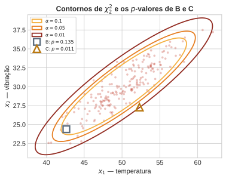
O histograma simulado acompanha a curva teórica \(\chi^2_d\) de perto — a prova algébrica acima e a simulação contam a mesma história por caminhos diferentes.
Em vez de só “dentro/fora” de um limiar fixo, isso permite definir o escore de anomalia como um \(p\)-valor:
\[ p(\mathbf{x}) = P\big(D_M(\mathbf{X}')^2 \ge D_M(\mathbf{x})^2 \mid \mathbf{X}'\sim\mathcal{N}(\hat{\boldsymbol\mu},\hat\Sigma)\big) = 1 - F_{\chi^2_d}\big(D_M(\mathbf{x})^2\big), \]
literalmente: qual a probabilidade de um ponto do modelo ajustado ser tão extremo, ou mais, quanto \(\mathbf{x}\). O limiar fixo é o caso particular \(p(\mathbf{x}) < \alpha\); o \(p\)-valor ordena todos os pontos por quão surpreendentes eles são, em vez de só separá-los em duas caixas.
AvisoArmadilha de interpretação
\(p(\mathbf{x})\) pequeno não significa “probabilidade de \(\mathbf{x}\) pertencer à distribuição verdadeira”. Significa “probabilidade de um ponto do modelo ajustado ser tão extremo quanto \(\mathbf{x}\)”. É uma afirmação sobre o modelo, condicional a ele estar certo — não é uma afirmação sobre a origem de \(\mathbf{x}\). Se o modelo estiver errado (Bloco 7), o \(p\)-valor também estará.
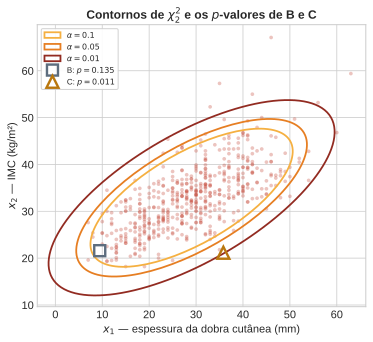
DicaJulgue V ou F: distância de Mahalanobis e o \(p\)-valor de anomalia
Julgue V ou F — a questão só conta se acertar os 4 itens:
- A distância de Mahalanobis reduz à distância Euclidiana quando \(\Sigma\) é a matriz identidade.
- Se \(\mathbf{x}\sim\mathcal{N}(\boldsymbol\mu,\Sigma)\), então \(D_M(\mathbf{x})^2\) segue uma distribuição qui-quadrado com \(d\) graus de liberdade.
- Um \(p\)-valor baixo para um ponto \(\mathbf{x}\) significa que a probabilidade de \(\mathbf{x}\) ter vindo da distribuição verdadeira é baixa.
- Dois pontos igualmente distantes do centro em distância Euclidiana podem ter distâncias de Mahalanobis bem diferentes.
6.2 Conjunta vs. por dimensão — o mesmo trade-off do Naive Bayes, agora em teste de hipótese
Calcular \(D_M\) exige estimar e inverter \(\hat\Sigma\) — \(d(d+1)/2\) parâmetros, caro e instável quando \(N\) não é \(\gg d\) (a armadilha do Bloco 4). A alternativa mais barata: supor independência entre dimensões (PRML discute exatamente essa restrição — \(\Sigma\) diagonal — em §2.3, p. 84, como uma forma de “tornar a inversão da matriz de covariância uma operação muito mais rápida”, ao custo de “limitar a capacidade do modelo de capturar correlações interessantes nos dados”). Sob essa suposição, calcula-se um \(p\)-valor por dimensão, \(p_i(x_i) = P(|Z_i|\ge|z_i|)\) usando só a marginal \(\mathcal{N}(\hat\mu_i,\hat\sigma_i^2)\) — \(d\) parâmetros, não \(d(d+1)/2\) — e combinam-se os \(d\) \(p\)-valores independentes pelo teste de Fisher, \(-2\sum_i\ln p_i(x_i) \sim \chi^2_{2d}\) (também estatística clássica, não coberta por PRML/DLFC — combinação padrão de \(p\)-valores independentes).
6.3 Duas Rotas para o Mesmo \(p\)-valor
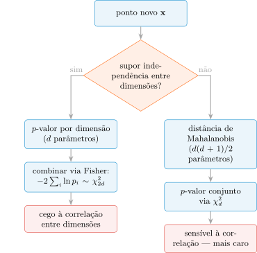
6.4 Onde a Suposição de Independência Erra
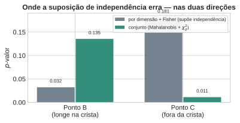
O gráfico mostra o erro nas duas direções. No ponto B, cada coordenada isolada já parece grande (o teste por dimensão dá um \(p\)-valor baixo), mas a combinação é exatamente o que a correlação prevê — o teste conjunto reconhece isso e dá um \(p\)-valor bem maior: falso alarme do teste por dimensão. No ponto C, cada coordenada isolada parece perfeitamente normal (o teste por dimensão dá um \(p\)-valor alto, tranquilizador), mas a combinação quebra a correlação — o teste conjunto enxerga isso e dá um \(p\)-valor baixo: anomalia real que o teste por dimensão deixa passar. Nenhum dos dois testes está “certo” em geral; a suposição de independência é uma escolha, com um preço que depende de onde a anomalia acontece — a mesma lição do preço da suposição de independência do Naive Bayes, agora em teste de hipótese em vez de classificação.
DicaJulgue V ou F: teste conjunto vs. teste por dimensão
Julgue V ou F — a questão só conta se acertar os 4 itens:
- Supor \(\Sigma\) diagonal equivale a supor independência entre as dimensões dos dados.
- O teste por dimensão, combinado pelo teste de Fisher, usa \(d(d+1)/2\) parâmetros — o mesmo que o teste conjunto via Mahalanobis.
- Um ponto pode ter \(p\)-valor baixo em cada dimensão isoladamente e ainda assim ter \(p\)-valor conjunto alto, se o desvio observado for consistente com a correlação entre as dimensões.
- Um ponto pode parecer normal em cada dimensão isoladamente e ainda assim ser uma anomalia no teste conjunto, se ele quebrar a relação de correlação entre as dimensões.
7 Exemplo Prático: Detecção de Anomalia em Ação
Antes de aplicar a receita inteira a casos concretos, duas perguntas que ficaram implícitas até aqui merecem resposta explícita.
Por que, afinal, alguém quer saber se um ponto é anômalo? Não é para “diagnosticar” a paciente — o rótulo de diabetes nunca entrou no ajuste do modelo, e esta aula não é sobre diagnóstico médico. O caso de uso é mais geral, e mais comum do que parece: controle de qualidade de dados e triagem de perfis atípicos. Antes de usar uma base de dados clínica em qualquer análise — treinar um modelo, calcular estatísticas de um estudo —, é prática padrão sinalizar registros fisiologicamente implausíveis (erro de digitação, falha de equipamento de medição) e perfis genuinamente incomuns que merecem uma segunda checagem manual, seja por um erro de coleta, seja por um caso clínico raro que vale a pena um especialista revisar de perto. \(p(\mathbf{x})\) baixo não é uma sentença — é um sinal de “olhe aqui com mais atenção”.
A população usada para ajustar o modelo é só de pessoas saudáveis? Não — e isso importa para o que vem a seguir. O Pima Indians Diabetes Dataset é uma coorte clínica geral: das \(538\) pacientes válidas usadas no ajuste, \(359\) não têm diabetes e \(179\) têm — uma mistura real, não uma referência “normal” isolada de uma população doente. O rótulo de diabetes existe no dataset, mas não foi usado para ajustar \(\hat{\boldsymbol\mu}\) e \(\hat\Sigma\) (a aula inteira é não-supervisionada); ele só reaparece agora, para explicar os dois casos abaixo depois do fato.
7.1 Um exemplo completo: detectando uma paciente real
Vale ver a receita inteira funcionar, do início ao fim, num caso real e inequívoco — sem nenhum ponto construído artificialmente.
O dataset tem, entre as pacientes válidas, uma com espessura de dobra cutânea de \(46\)mm e IMC de \(67{,}1\) \(\text{kg/m}^2\) — o maior IMC de todo o conjunto. Aplicando a receita da aula, nessa ordem:
- O modelo já ajustado (Bloco 4): \(\hat{\boldsymbol\mu} = [29{,}05,\ 32{,}89]^T\), com \(\hat\Sigma\) estimada da população de \(538\) pacientes.
- A distância de Mahalanobis (Bloco 5) dessa paciente até o centro do modelo: \(D_M(\mathbf{x})^2 \approx 29{,}85\).
- O \(p\)-valor (Bloco 6): \(p(\mathbf{x}) = 1 - F_{\chi^2_2}(29{,}85) \approx 3{,}3\times 10^{-7}\) — uma entre praticamente três milhões.
A conclusão é inequívoca: sob o modelo ajustado, uma paciente tão extrema quanto esta seria observada com probabilidade próxima de zero. Diferente do contraste sutil entre B e C (Bloco 6), aqui não há ambiguidade nenhuma — o IMC de \(67{,}1\) sozinho já está no percentil \(99{,}8\) da população (um teste ingênuo por dimensão também a acusaria, sem precisar de correlação alguma). É esse o caso mais simples e mais comum de detecção de anomalia na prática: nem toda anomalia depende de uma correlação quebrada entre variáveis — a maioria, como esta, é simplesmente um valor extremo isolado, e o pipeline completo (ajustar \(\to\) medir distância \(\to\) converter em \(p\)-valor) capta os dois casos com a mesma régua.
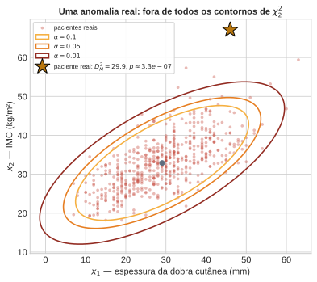
A estrela cai bem longe de todos os contornos — inclusive do mais extremo (\(\alpha=0{,}01\)) — visualmente consistente com um \(p\)-valor da ordem de \(10^{-7}\).
7.2 Quando o modelo erra: um veredito que muda de lado
O caso anterior foi limpo porque o modelo — uma única Gaussiana para toda a população — realmente descreve bem essa paciente. Mas a população é, como acabamos de ver, uma mistura de duas subpopulações (com e sem diabetes) — e o Bloco 7 vai argumentar, em abstrato, que isso pode quebrar a receita. Aqui está a versão concreta, com uma segunda paciente real.
Considere a paciente diabética com a menor espessura de dobra cutânea de todo o dataset (\(7\)mm) e IMC \(27{,}6\) — um corpo magro para o padrão de quem tem diabetes nesta amostra (a subpopulação diabética tem, em média, mais gordura subcutânea). Ajustando o modelo só à subpopulação diabética (\(N=179\)), essa combinação é surpreendente: \(p\approx 0{,}016\), abaixo do limiar usual de \(5\%\) — seria flagrada. Ajustando o modelo à população inteira (\(N=538\), o que a aula fez até aqui), a mesma paciente, com os mesmos números, deixa de ser flagrada: \(p\approx 0{,}057\), acima de \(5\%\) — ela se mistura com os pacientes magros e não-diabéticos que também estão na base. Nenhum dos dois cálculos está “errado” em termos de aritmética; a diferença inteira vem de qual população de referência se assume.
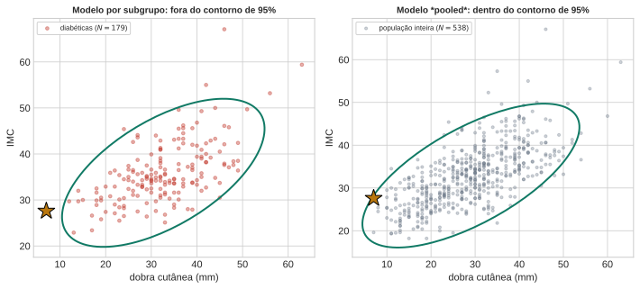
A mesma estrela, os mesmos dois números — só a população de referência muda entre os dois painéis, e o veredito muda junto.
Qual dos dois confiar, e por quê? Nenhum dos dois \(p\)-valores é um erro de cálculo — cada um está correto dentro do modelo em que foi calculado. Mas os dois modelos não são igualmente apropriados aqui. A paciente é genuinamente incomum para uma pessoa com diabetes especificamente — nesta amostra, diabéticas carregam mais gordura subcutânea em média, então uma diabética com dobra cutânea tão fina destoa dentro desse grupo. O modelo pooled não sabe que esse subgrupo existe: sua noção de “típico” é uma média borrada entre os dois grupos, alargada pelo simples fato de que várias pacientes não-diabéticas são igualmente magras. Contra essa referência mais larga e borrada, ela não chama atenção.
A lição não é “a conta deu diferente” — é que o modelo pooled foi a ferramenta errada aqui, porque a população que ele descreve não é, de fato, uma única Gaussiana: é uma mistura de duas subpopulações com composições corporais típicas diferentes. A consequência prática é concreta, não abstrata: uma anomalia real, específica de um subgrupo, pode escapar ilesa exatamente porque tudo foi agrupado numa única distribuição de referência em vez de ser modelado por subgrupo (ou por uma mistura de verdade — fora do escopo desta aula). O Bloco 7 fecha a aula nomeando esse risco (e o segundo, outliers no ajuste) de forma explícita.
8 Armadilhas e Ponte para a Aula 2
Dois jeitos de essa receita quebrar, nenhum deles resolvido nesta aula:
- Dados genuinamente multimodais. Se a população real tem duas subpopulações distintas, uma única Gaussiana ajustada é uma média cega entre os dois modos — o ajuste “funciona” no sentido de que a matemática produz \(\hat{\boldsymbol\mu}\) e \(\hat\Sigma\) válidos, e mesmo assim a descrição resultante mente sobre a forma real dos dados. É exatamente o que a própria população desta aula é: separando os pacientes com e sem diabetes (rótulo não usado no ajuste, mas disponível no dataset), a média de IMC muda de \(31{,}4\) para \(35{,}9\) — e, como o exemplo prático anterior mostrou com uma paciente real, essa mistura pode mudar o veredito de anômalo para típico (ou vice-versa), dependendo de qual população de referência se assume.
- Outliers no próprio conjunto de ajuste. \(\hat{\boldsymbol\mu}\) e \(\hat\Sigma\) são médias — poucos pontos extremos os deslocam e inflam \(\hat\Sigma\), o que aumenta o limiar e esconde exatamente o que se queria detectar. Isso não é resolvido aqui; é um problema de robustez (estimadores robustos de locação/escala) fora do escopo desta aula. O próprio dataset desta aula tem um exemplo real: antes de filtrar, uma paciente registrada com \(99\)mm de espessura de dobra cutânea (fisiologicamente improvável — quase certamente um erro de coleta) já bastava para inflar \(\det\hat\Sigma\) em cerca de \(13\%\) sozinha, mesmo entre quase \(540\) pacientes.
Retomando as perguntas de abertura
- Que forma de modelo faz sentido sem rótulo? Uma família teórica com poucos parâmetros — a Gaussiana multivariada, motivada por máxima entropia e pelo Teorema Central do Limite.
- Como ajustar essa forma? Por máxima verossimilhança — \(\hat{\boldsymbol\mu}\) é a média amostral, \(\hat\Sigma\) a covariância amostral (viesada; corrigida dividindo por \(N-1\)); o ajuste trava se \(N\le d\).
- Como comparar um ponto novo ao modelo? Pela distância de Mahalanobis, não pela Euclidiana — ela pondera cada direção pela variância (e correlação) que o modelo aprendeu.
- Como transformar isso numa afirmação probabilística rigorosa — e onde a receita quebra? Via \(p\)-valor sob \(\chi^2_d\); quebra sob multimodalidade e sob outliers não tratados no próprio ajuste.
Ponte para a Aula 2
Toda a aula assumiu que uma única forma paramétrica — a Gaussiana — descreve os dados. A Aula 2 relaxa essa suposição pelo lado não-paramétrico: em vez de assumir uma família, estimar a densidade diretamente dos vizinhos mais próximos (\(k\)-NN) e suavizar com Estimação de Densidade por Kernel (KDE). O preço dessa liberdade — a maldição da dimensionalidade, já anunciada no Bloco 4 — é o assunto de lá.
9 Exercícios
9.1 Questões discursivas
Explique por que a distribuição empírica “nunca está errada”, mas ainda assim não é suficiente para decidir se um ponto novo é típico ou anômalo. Sua explicação deve mencionar o que a distribuição empírica diz (ou deixa de dizer) sobre regiões do espaço onde nenhum ponto foi observado.
A distância de Mahalanobis “reduz à distância Euclidiana quando \(\Sigma\) é a matriz identidade” (PRML, tradução nossa). Explique o que isso significa geometricamente, e descreva um exemplo (pode ser hipotético) em que a diferença entre as duas distâncias muda a decisão de marcar ou não um ponto como anômalo.
Um colega propõe substituir o teste conjunto (via distância de Mahalanobis e \(\chi^2_d\)) pelo teste por dimensão combinado via Fisher em todos os casos, para economizar parâmetros. Usando o contraste entre os pontos B e C desta aula, explique por que essa substituição não é sempre segura.
9.2 Questões de Verdadeiro/Falso
Cada bloco de 4 itens trata do mesmo tema. A questão só é considerada correta se todos os 4 itens forem julgados corretamente (deixar em branco tem penalidade de 20% da nota da questão).
DicaModelagem sem rótulos e profiling
( ) Em aprendizado não supervisionado, o objetivo central é encontrar uma função que preveja um rótulo \(y\) a partir de \(\mathbf{x}\).
( ) Profiling é a tarefa de descrever o comportamento típico de uma população para depois reconhecer o que se desvia dele.
( ) Espessura da dobra cutânea e IMC podem variar de forma correlacionada numa população de pacientes.
( ) A pergunta central desta aula é “que forma esses dados têm”, não “que função prevê \(y\)”.
DicaDistribuição empírica vs. distribuição teórica
( ) A distribuição empírica é, em algum sentido, sempre “correta”, pois é literalmente o que foi observado.
( ) A distribuição empírica generaliza bem para regiões do espaço onde poucos ou nenhum ponto foi observado.
( ) Assumir uma família teórica com poucos parâmetros troca ruído por estrutura, ao custo de a suposição poder estar errada.
( ) A escolha de uma família teórica específica (como a Gaussiana) é sempre garantidamente correta, desde que \(N\) seja grande o suficiente.
DicaA Gaussiana multivariada: forma geométrica
( ) As curvas de nível de densidade constante de uma Gaussiana multivariada são elipsoides centrados em \(\boldsymbol\mu\).
( ) Os autovetores de \(\Sigma\) determinam a orientação dos eixos dessas elipsoides.
( ) Os autovalores de \(\Sigma\) determinam o comprimento desses eixos.
( ) \(\Sigma\) pode ser qualquer matriz quadrada, sem restrição de simetria ou de definição positiva.
DicaPor que a Gaussiana é a escolha natural
( ) A Gaussiana é a distribuição de entropia máxima dada uma média e uma covariância fixas.
( ) O Teorema Central do Limite diz que a soma de muitas variáveis aleatórias, sob condições brandas, tende a uma distribuição Gaussiana.
( ) O Teorema Central do Limite garante que qualquer conjunto de dados observado é, de fato, gaussiano.
( ) A escolha da Gaussiana como modelo é uma suposição, não uma consequência lógica obrigatória dos dados.
DicaMáxima verossimilhança para \(\boldsymbol\mu\) e \(\Sigma\)
( ) O estimador de máxima verossimilhança de \(\boldsymbol\mu\) é a média amostral \(\bar{\mathbf{x}}\).
( ) O estimador de máxima verossimilhança de \(\Sigma\) (dividido por \(N\)) é a matriz de covariância amostral.
( ) A derivação do estimador de máxima verossimilhança de \(\boldsymbol\mu\) e \(\Sigma\) segue do mesmo princípio de maximização da log-verossimilhança usado em outras partes do curso.
( ) O estimador de máxima verossimilhança de \(\boldsymbol\mu\) depende da escolha de um limiar de anomalia.
DicaViés do estimador de covariância
( ) O estimador de máxima verossimilhança \(\hat\Sigma_{\text{ML}}\) (dividido por \(N\)) subestima, em esperança, a covariância verdadeira.
( ) A correção padrão para o viés de \(\hat\Sigma_{\text{ML}}\) consiste em dividir por \(N-1\) em vez de \(N\).
( ) O estimador de máxima verossimilhança de \(\boldsymbol\mu\) também é viesado, pela mesma razão que \(\hat\Sigma_{\text{ML}}\).
( )
np.covcom o parâmetro padrão do NumPy usa a correção por \(N-1\), não a versão de máxima verossimilhança dividida por \(N\).
DicaA armadilha \(N \le d\)
( ) Se \(N \le d\), a matriz de covariância amostral \(\hat\Sigma\) tem posto no máximo \(N-1\).
( ) Uma matriz de covariância amostral com posto menor que \(d\) é sempre invertível.
( ) Sem \(\hat\Sigma^{-1}\), a distância de Mahalanobis não pode ser calculada.
( ) A armadilha \(N \le d\) é uma primeira manifestação da maldição da dimensionalidade, tema da Aula 2.
DicaDistância de Mahalanobis vs. distância Euclidiana
( ) A distância de Mahalanobis reduz à distância Euclidiana quando \(\Sigma\) é a matriz identidade.
( ) \(\Sigma^{-1}\) estica o espaço nas direções de alta variância e comprime nas direções de baixa variância.
( ) Dois pontos igualmente distantes do centro em distância Euclidiana podem ter distâncias de Mahalanobis diferentes.
( ) Um deslocamento ao longo da direção de maior correlação entre as variáveis pode “custar pouco” em distância de Mahalanobis, mesmo parecendo grande em unidades brutas.
DicaDa distância de Mahalanobis ao \(p\)-valor
( ) Se \(\mathbf{x}\sim\mathcal{N}(\boldsymbol\mu,\Sigma)\), a distância de Mahalanobis ao quadrado \(D_M(\mathbf{x})^2\) segue uma distribuição qui-quadrado com \(d\) graus de liberdade.
( ) O \(p\)-valor de anomalia definido nesta aula é a probabilidade de um ponto do modelo ajustado ser tão extremo, ou mais, quanto o ponto observado.
( ) Um limiar fixo de anomalia (dentro/fora) é um caso particular do escore contínuo dado pelo \(p\)-valor.
( ) O \(p\)-valor ordena os pontos apenas em duas categorias (típico/anômalo), sem informação adicional sobre o grau de surpresa.
DicaA armadilha de interpretação do \(p\)-valor
( ) Um \(p\)-valor baixo significa que a probabilidade de o ponto observado pertencer à distribuição verdadeira é baixa.
( ) Um \(p\)-valor baixo é uma afirmação condicional a o modelo ajustado estar correto.
( ) Se o modelo ajustado estiver errado, o \(p\)-valor calculado a partir dele também estará comprometido.
( ) O \(p\)-valor é uma afirmação sobre o modelo, não uma afirmação direta sobre a origem do ponto observado.
DicaTeste conjunto vs. teste por dimensão
( ) Supor \(\Sigma\) diagonal é equivalente a supor independência entre as dimensões dos dados.
( ) O teste por dimensão, combinado pelo teste de Fisher, usa menos parâmetros do que o teste conjunto via distância de Mahalanobis.
( ) Um ponto que quebra a relação de correlação entre duas dimensões, mas parece normal em cada dimensão isoladamente, é sempre detectado pelo teste por dimensão.
( ) O teste conjunto via Mahalanobis é sensível a esse tipo de quebra de correlação, mesmo quando o teste por dimensão não é.
DicaLimitações: multimodalidade e outliers no ajuste
( ) Uma única Gaussiana ajustada a dados genuinamente multimodais (com duas subpopulações distintas) sempre falha ao produzir \(\hat{\boldsymbol\mu}\) e \(\hat\Sigma\) numericamente válidos.
( ) Outliers no próprio conjunto usado para ajustar \(\hat{\boldsymbol\mu}\) e \(\hat\Sigma\) podem inflar \(\hat\Sigma\) e esconder anomalias reais.
( ) O problema de robustez a outliers no ajuste é resolvido, nesta aula, por um estimador robusto de locação e escala.
( ) A saída não-paramétrica (\(k\)-NN e KDE), tema da Aula 2, evita a suposição de uma única forma paramétrica para os dados.
9.3 Aviso
As questões de Verdadeiro/Falso e discursivas ficam sem solução neste arquivo — são para resolução autônoma do aluno, fora do horário de aula.